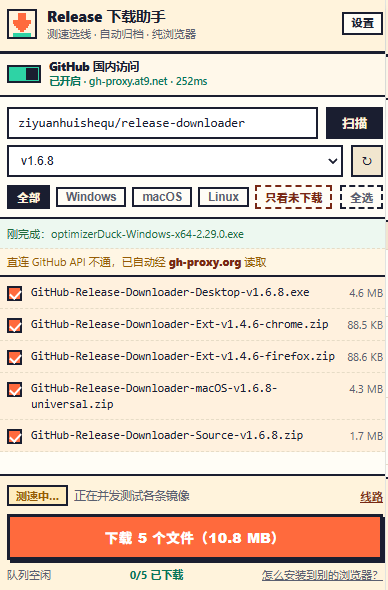
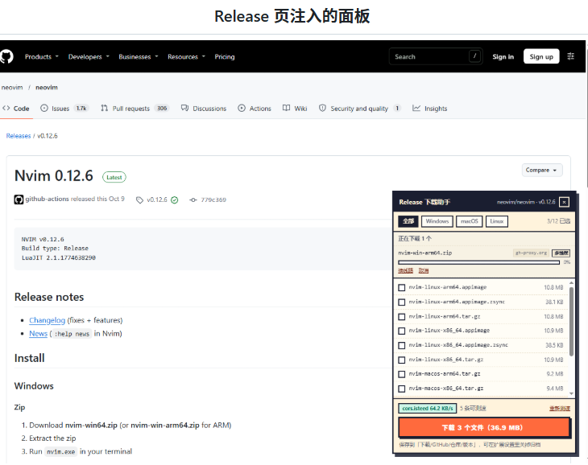
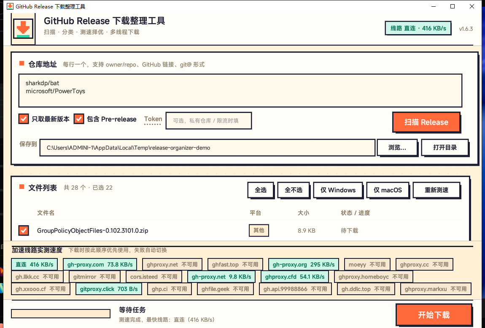
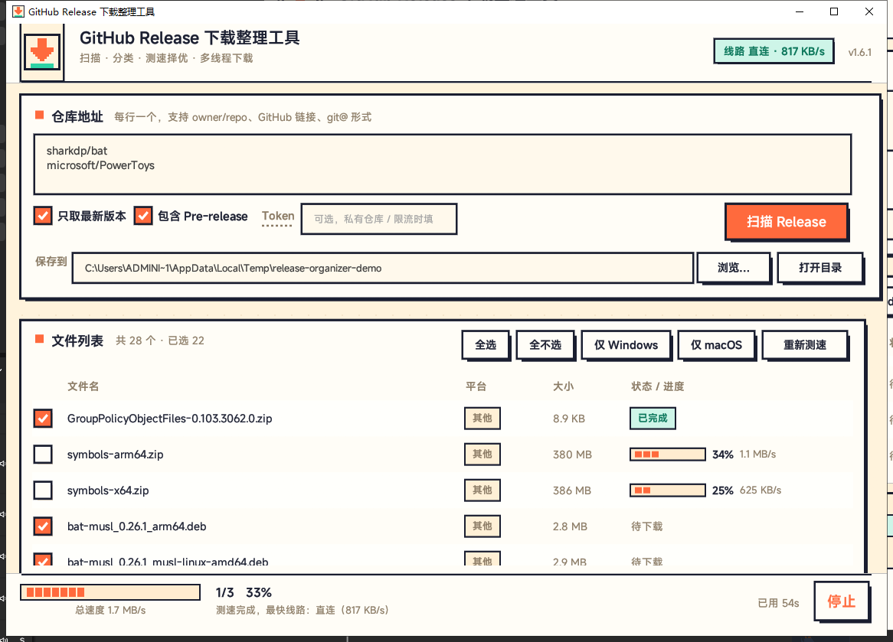
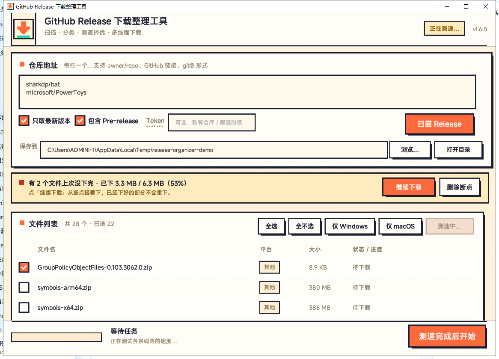

多线程分片，卡顿自愈
大文件自动切成 4 / 6 / 8 段并发拉取。某一段 10 秒没有新字节就断开重连， 比同伴慢一大截的分片主动踢掉换线路，剩下的继续跑，不用整包重来。
v1.6.9 已发布 Windows / macOS 浏览器扩展
批量扫描仓库、多线程分片下载、按系统自动归档到不同文件夹。 桌面版是一个 4.7 MB 的免安装单文件；浏览器扩展在国内 不用梯子 也能直接打开 GitHub，下载还很快。
免安装 · 不写注册表 · 开源 MIT · 文件直接从本站下载，打不开 GitHub 也能装

核心能力
下载慢通常不是带宽不够，而是只开了一条连接、还卡在一条死线路上。这里三件事同时解决了它。
大文件自动切成 4 / 6 / 8 段并发拉取。某一段 10 秒没有新字节就断开重连， 比同伴慢一大截的分片主动踢掉换线路，剩下的继续跑，不用整包重来。
下载前并发测速，按实测速度排优先级；当前线路慢了 5.5 秒还没起色，就自动换下一条， 最多换 6 条，换过的线路会冷却一会儿，不再反复排第一。
按 仓库 / 系统 建子文件夹，Windows、macOS、Linux 各归各位，
文件不再糊成一堆。中断后已下的分片留着，下次一键接着下。
浏览器扩展 · Chrome / Edge / Firefox
打开「GitHub 国内访问」开关，仓库页、Releases、Issues、代码树直接就能打开， 不用梯子、不用改 hosts、不用装代理软件。
仓库/版本/ 归档，中键点开也一样接管。解压后在扩展管理页开启「开发者模式」→「加载已解压的扩展程序」

界面预览
没有渐变大按钮和花哨动效。信息密、状态清楚：哪条线路在跑、哪个分片卡了、还剩多久，一眼看到。




三步开始
Windows 双击 exe 就能开，macOS 解压后把 App 拖进「应用程序」。 不用安装、不写注册表，删掉即卸载。
一行一个，支持 owner/repo、GitHub 链接、git@ 形式。
私有仓库可以填 Token。
扫描后按平台筛选，勾上就开始。自动测速选线、分片并发、
按 仓库/系统/ 归好目录。
文件托管在本站，国内可直接下载，不需要打开 GitHub。
Windows 首次运行可能提示「已保护你的电脑」：这是未购买代码签名导致的，
点「更多信息 → 仍要运行」即可；源码公开可自行编译。
也可以去 GitHub Releases 或
查看源码。
常见问题
它把 GitHub 的页面请求转发到几个公开的加速镜像上，属于「换条路走」，不是破解。 镜像失效是这个方案唯一的风险点，所以线路池是可远端更新的：内置 20 条兜底， 程序启动时会拉一次最新列表，也可以在设置里填自己的线路。某条不通只会被跳过，不会影响整体。
先看是不是浏览器/系统这一层被拦了：关掉 Chrome 的「使用安全 DNS」、
检查代理软件有没有丢弃 *.gh-proxy.com 这类域名、临时关掉安全软件的联网防护。
扩展会按「实测够快 → 测不出但可达 → 测得慢 → 连不上」分档尝试，只要有一条真能用就会挑出来。
下载 zip 解压到一个固定文件夹（别删），打开 chrome://extensions
（Edge 是 edge://extensions）→ 右上角打开「开发者模式」→
「加载已解压的扩展程序」→ 选中解压出来的文件夹。
Windows 上的 Chrome 不允许双击安装非商店来源的 .crx，所以只能这样装。
不会。扩展和桌面版都只把请求发往 GitHub 与你选中的镜像，没有自建的统计服务， 也不收集任何使用数据。Token 只用于你自己发起的 API 请求。
因为没买苹果开发者签名。在「应用程序」里 右键 → 打开，或到 「系统设置 → 隐私与安全性」点「仍要打开」即可。源码和 CI 构建流程都在仓库里。